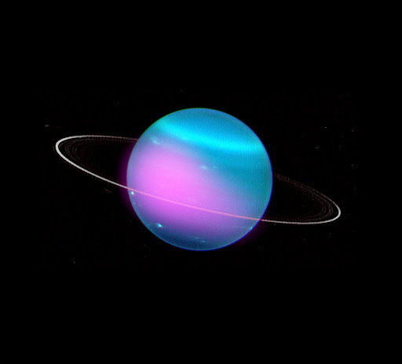

Overview
Uranus is the seventh planet from the Sun, and has the third-largest
diameter in our solar system. It was the first planet found with the aid
of a telescope, Uranus was discovered in 1781 by astronomer
Herschel, although he originally thought it was either a comet or a star.
It’s not
visible to the naked eye, and became the first planet discovered with the use of a telescope.
Uranus is tipped over on its
side with an axial tilt of 98 degrees. It is often described as “rolling around the Sun on its side.”